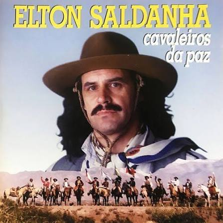

(Eu sou do sul, é só olhar pra ver que eu sou do sul
A minha
terra tem um céu azul, é só olhar e ver) 2x
Nascido entre a poesia e o arado
A gente lida com o gado e cuida
da plantação
A minha gente que veio da guerra
Cuida desta
terra como quem cuida do coração
(Eu sou do sul, é só olhar pra ver que eu sou do sul
A minha
terra tem um céu azul, é só olhar e ver) 2x
Você que não conhece o meu estado
Está convidado a ser feliz
neste lugar
A serra te dá o vinho o litoral te dá o carinho
O
Guaíba te dá um pôr de sol lá na capital
(Eu sou do sul, é só olhar pra ver que eu sou do sul
A minha
terra tem um céu azul, é só olhar e ver) 2x
Na fronteira, los hermanos é prenda cavalo e canha
Viver lá na
campanha é bom demais
Que um santo missioneiro te acompanhe
companheiro
Se puder vem lavar a alma no rio Uruguai
(Eu sou do sul, é só olhar pra ver que eu sou do sul
A minha
terra tem um céu azul, é só olhar e ver) 2x
